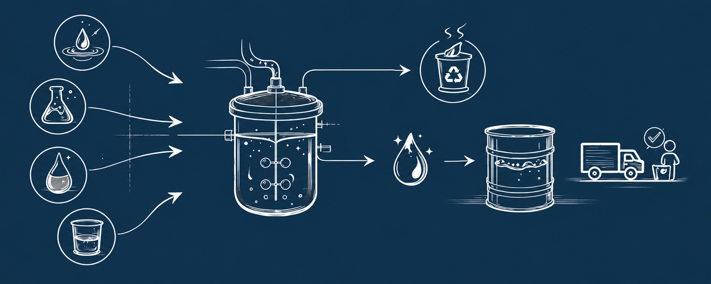

Un flux continu maîtrisé
La chimie en flux révolutionne la production en remplaçant les procédés discontinus (Batch) par un flux continu maîtrisé.


Chimie en flux continu
Le fonctionnement
Flow Industrie développe une plateforme de production chimique en flux continu. Elle nous permet de produire, en quantités régulières, les molécules dont vous dépendez.
La chimie en flux révolutionne la production en remplaçant les procédés discontinus (Batch) par un flux continu maîtrisé.

Les réactifs circulent dans des micro-canaux, permettant des réactions précises, rapides et en temps réel.
Ce modèle produit « à la demande », sans interruption, avec une qualité constante et reproductible.
Résultats
Conception
Performances
| Production par campagnes (batch) | Flux continu avec Flow Industrie | |
|---|---|---|
| Volume en réaction | De plusieurs centaines de litres à plusieurs m³ | Moins d'un litre |
| Mode de production | Par lots et cycles longs et successifs | En continu |
| Pilotage | Par lots et cycles | En temps réel |
| Résultat | Un lot à contrôler | Une qualité constante |
| Logique industrielle | Produire, stocker puis utiliser | Produire au rythme du besoin |
| Investissement | Développement long et coûteux | Développement rapide et très compétitif |
Notre méthode
Notre travail consiste à transformer une réaction chimique en un procédé capable de répondre à un besoin industriel.
01
Comprendre
Nous analysons vos besoins et vos molécules.
02
Développer
Nous transposons vos procédés au flux continu.
03
Valider
Nous vérifions ensemble que les molécules répondent à vos exigences.
04
Industrialiser
Nous préparons le passage vers une production récurrente.
05
Produire
Nous assurons la production et la livraison de vos molécules.
1 / 5
Nos valeurs ajoutées
La souveraineté n'est pas un slogan : c'est la somme de choix industriels concrets.
Un procédé conçu, validé et piloté par des chimistes du flux continu.
Le flux continu réduit les coûts de production.
Une production 100% française, pour une souveraineté industrielle durable.
Production au plus près du besoin : moins de transport, moins de déchets, plus durable.
Ils nous font confiance et nous accompagnent dans notre développement.
 Eltia Groupe
Eltia Groupe  TAES
TAES  Réseau Entreprendre
Réseau Entreprendre C'est la première question que nous traitons.
FAQ
Flow Industrie développe, produit et livre des molécules chimiques pour les industriels. Nous prenons en charge le développement du procédé, sa mise à l'échelle puis la production récurrente de la molécule sur notre site en France. Les produits sont ensuite livrés en quantités régulières, adaptées aux besoins de votre production.
Oui, sous réserve que la molécule et son procédé soient compatibles avec notre technologie de production en flux continu. Chaque projet commence par une étude de faisabilité permettant d'évaluer la molécule, le procédé, les contraintes de production et les volumes nécessaires avant tout engagement.
La chimie en flux continu consiste à faire circuler en continu les réactifs dans un équipement de production, plutôt que de réaliser la réaction par lots successifs. Cette technologie permet notamment de mieux contrôler les paramètres du procédé, de produire de manière régulière et d'adapter les volumes de production aux besoins industriels.
Flow Industrie peut étudier des projets dans différents domaines de la chimie : chimie fine, pharmacie et biotech, énergie, agrochimie, pétrochimie, défense, spatial, parfumerie et cosmétique. La faisabilité dépend toutefois des caractéristiques propres à chaque molécule et de son procédé de synthèse.
Oui. L'un des intérêts de notre modèle est de pouvoir produire des quantités régulières, plutôt que d'imposer l'achat et le stockage de grandes quantités de produit. Les volumes peuvent évoluer en fonction des besoins du client, du kilogramme jusqu'à plusieurs dizaines de tonnes par an.
Flow Industrie peut accompagner des besoins allant du kilogramme jusqu'à environ 100 tonnes par an, selon la molécule, le procédé et les caractéristiques du projet. Les volumes sont définis avec le client en fonction de sa consommation et de ses besoins industriels.
Produire une molécule en France permet de réduire la dépendance à un fournisseur éloigné, de mieux maîtriser son approvisionnement et de limiter les contraintes liées au transport et au stockage. Pour une molécule stratégique, une production locale peut également contribuer à sécuriser la continuité de la production industrielle.
Flow Industrie accompagne les industriels dans le développement, l'industrialisation et la production de leurs molécules chimiques. Notre intervention couvre notamment la mise au point du procédé, la production en flux continu en France et les livraisons régulières du produit fini.
Un projet commence par l'identification de la molécule et une étude de faisabilité. Si le projet est compatible avec notre technologie, nous développons et validons le procédé, puis nous passons à la production et à la mise en place des livraisons récurrentes.
Étude de faisabilité Développement du procédé Mise à l'échelle Production Livraisons régulières
La production en flux continu permet notamment un meilleur contrôle du procédé, une production régulière et une adaptation des volumes aux besoins industriels. Elle peut également réduire certaines contraintes liées à la production par lots, selon la nature de la molécule et du procédé.